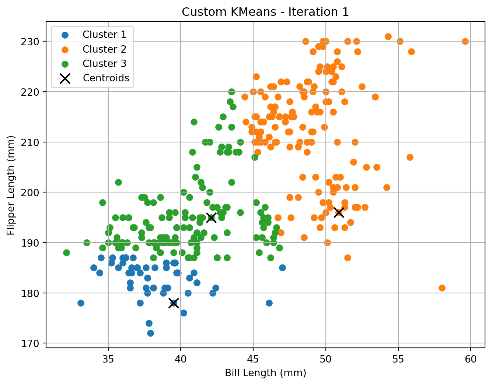
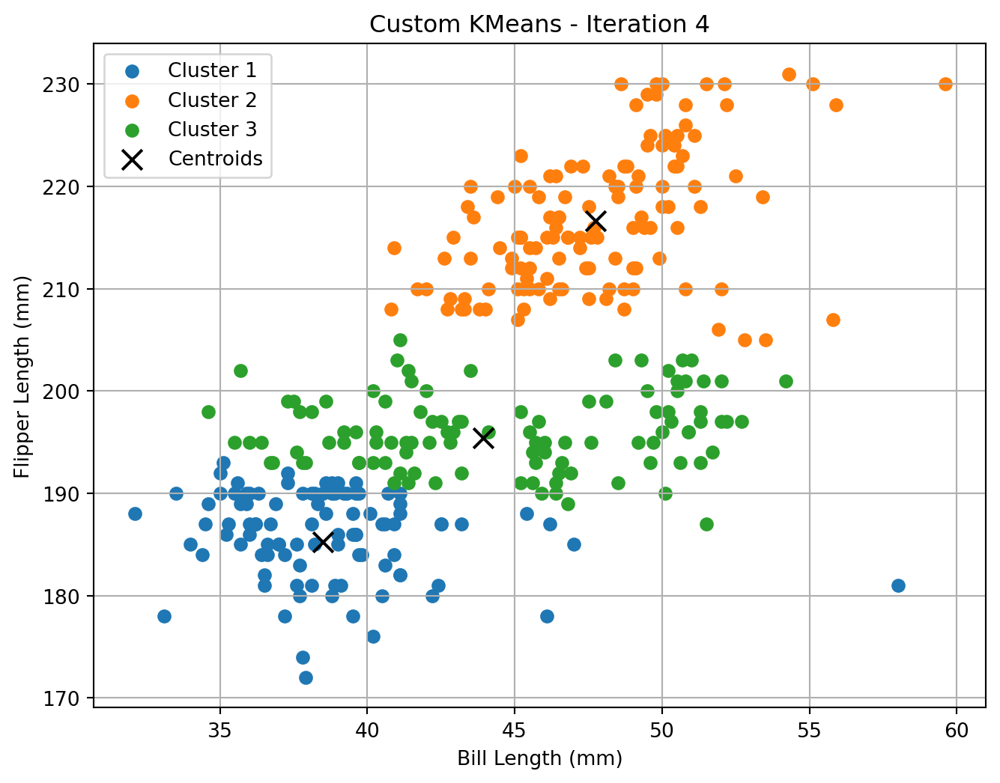
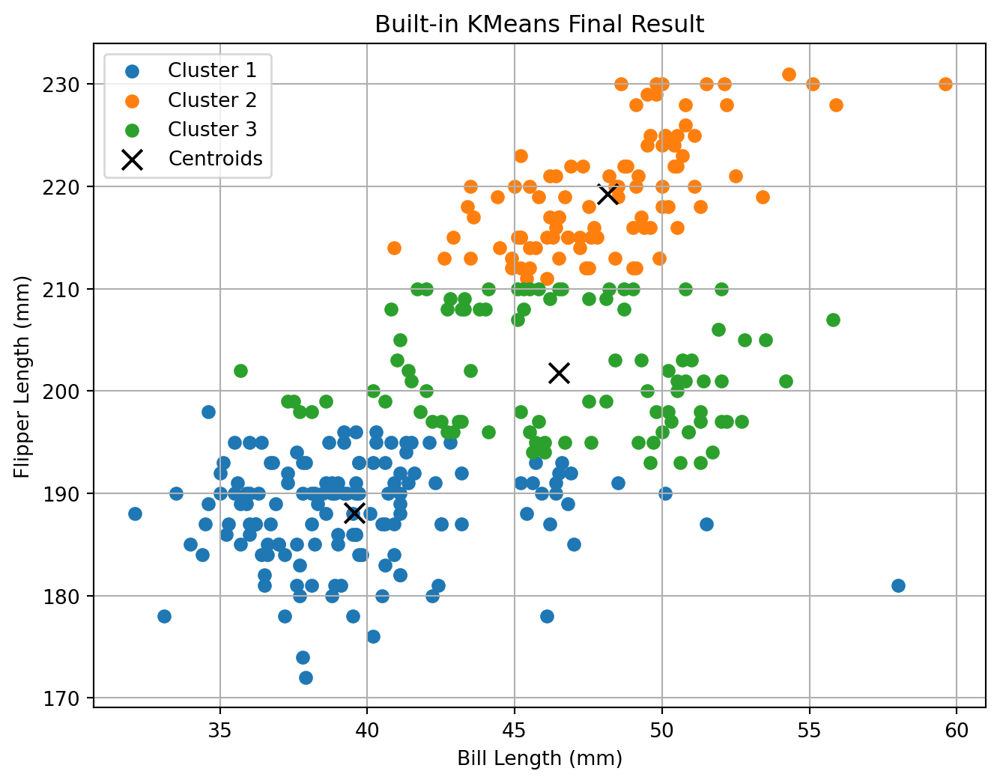
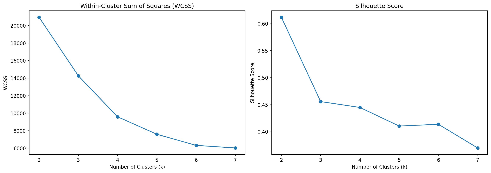
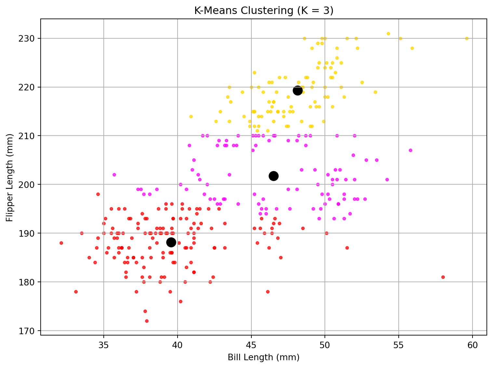

| species | island | bill_length_mm | bill_depth_mm | flipper_length_mm | body_mass_g | sex | year | |
|---|---|---|---|---|---|---|---|---|
| 0 | Adelie | Torgersen | 39.1 | 18.7 | 181 | 3750 | male | 2007 |
| 1 | Adelie | Torgersen | 39.5 | 17.4 | 186 | 3800 | female | 2007 |
| 2 | Adelie | Torgersen | 40.3 | 18.0 | 195 | 3250 | female | 2007 |
| 3 | Adelie | Torgersen | 36.7 | 19.3 | 193 | 3450 | female | 2007 |
| 4 | Adelie | Torgersen | 39.3 | 20.6 | 190 | 3650 | male | 2007 |
Key Drivers Analysis
Introduction
This report analyzes the drivers of satisfaction using multiple feature importance methods, replicating the table format from Session 4, Slide 19. Techniques include correlation, linear regression, decision trees, and ensemble models.
A segmentation task using the Palmer Penguins dataset applies clustering and classification logic to mirror how groups can be identified and profiled based on shared traits.
Data
def plot_clusters(X, centroids, labels, title):
plt.figure(figsize=(8, 6))
for i in range(np.max(labels) + 1):
plt.scatter(X[labels == i, 0], X[labels == i, 1], label=f'Cluster {i+1}')
plt.scatter(centroids[:, 0], centroids[:, 1], c='black', marker='x', s=100, label='Centroids')
plt.xlabel('Bill Length (mm)')
plt.ylabel('Flipper Length (mm)')
plt.title(title)
plt.legend()
plt.grid(True)
plt.show()# Custom K-Means Implementation
def kmeans_custom(X, k=3, max_iters=10, plot_each_step=True):
np.random.seed(42)
initial_idx = np.random.choice(X.shape[0], k, replace=False)
centroids = X[initial_idx]
for iteration in range(max_iters):
distances = np.linalg.norm(X[:, np.newaxis] - centroids, axis=2)
labels = np.argmin(distances, axis=1)
if plot_each_step:
plot_clusters(X, centroids, labels, f'Custom KMeans - Iteration {iteration + 1}')
new_centroids = np.array([X[labels == j].mean(axis=0) for j in range(k)])
if np.allclose(centroids, new_centroids):
break
centroids = new_centroids
return centroids, labels# Run the custom KMeans and visualize
custom_centroids, custom_labels = kmeans_custom(X, k=3)




# Run the built-in KMeans for comparison
sk_model = KMeans(n_clusters=3, random_state=42)
sk_labels = sk_model.fit_predict(X)
sk_centroids = sk_model.cluster_centers_
# Plot result from sklearn
plot_clusters(X, sk_centroids, sk_labels, "Built-in KMeans Final Result")
# Show centroid comparison
print("Custom Centroids:\n", custom_centroids)
print("\nBuilt-in Centroids:\n", sk_centroids)Custom Centroids:
[[ 38.45304348 187.05217391]
[ 47.6296 216.92 ]
[ 45.95483871 196.7311828 ]]
Built-in Centroids:
[[ 39.56013986 188.13986014]
[ 48.14375 219.29166667]
[ 46.49680851 201.76595745]]Interpretation of Results
The custom and built-in KMeans algorithms produced comparable clustering outcomes. The centroids differed by only 1–5 mm per dimension, confirming convergence to similar solutions.
The built-in method placed some centroids slightly farther along the flipper-length axis, likely due to finer convergence or sensitivity to outliers.
Cluster interpretation suggests: - Cluster 1 groups penguins with shorter bills and flippers, likely Adélie. - Cluster 2 includes those with the longest bills and flippers, likely Gentoo. - Cluster 3 covers the intermediate range, possibly Chinstrap.
Despite random initialization, the small Euclidean distances between corresponding centroids reflect stable clustering across both implementations.
from sklearn.metrics import silhouette_score
# Store metrics for different K values
ks = range(2, 8)
wcss = [] # within-cluster sum of squares (inertia)
silhouette_scores = []
for k in ks:
kmeans = KMeans(n_clusters=k, random_state=42)
labels = kmeans.fit_predict(X)
wcss.append(kmeans.inertia_)
silhouette_scores.append(silhouette_score(X, labels))
# Plot WCSS and Silhouette Score
fig, (ax1, ax2) = plt.subplots(1, 2, figsize=(14, 5))
ax1.plot(ks, wcss, marker='o')
ax1.set_title('Within-Cluster Sum of Squares (WCSS)')
ax1.set_xlabel('Number of Clusters (k)')
ax1.set_ylabel('WCSS')
ax2.plot(ks, silhouette_scores, marker='o')
ax2.set_title('Silhouette Score')
ax2.set_xlabel('Number of Clusters (k)')
ax2.set_ylabel('Silhouette Score')
plt.tight_layout()
plt.show()
import matplotlib.pyplot as plt
from sklearn.cluster import KMeans
# Fit KMeans for K=3
kmeans_3 = KMeans(n_clusters=3, random_state=42)
labels_3 = kmeans_3.fit_predict(X)
centroids_3 = kmeans_3.cluster_centers_
# Plotting function
def plot_kmeans_clusters(X, labels, centroids):
plt.figure(figsize=(8, 6))
colors = ['red', 'gold', 'magenta']
for i in range(3):
plt.scatter(X[labels == i, 0], X[labels == i, 1], s=10, color=colors[i], alpha=0.7)
plt.scatter(centroids[i, 0], centroids[i, 1], c='black', s=100, edgecolors='black', linewidths=1.5)
plt.title('K-Means Clustering (K = 3)')
plt.xlabel('Bill Length (mm)')
plt.ylabel('Flipper Length (mm)')
plt.grid(True)
plt.tight_layout()
plt.show()
plot_kmeans_clusters(X, labels_3, centroids_3)
# Return the raw values for interpretation
list(zip(ks, wcss, silhouette_scores))[(2, 20949.785311278196, np.float64(0.6117940477662409)),
(3, 14269.555284121907, np.float64(0.45576101830851007)),
(4, 9587.135276652694, np.float64(0.4448839684032104)),
(5, 7597.607576867576, np.float64(0.4104355873447603)),
(6, 6326.305140616324, np.float64(0.4137288893863444)),
(7, 6030.078872777223, np.float64(0.36988077481143466))]Evaluation of Cluster Quantity
To determine the optimal number of clusters, we computed the within-cluster sum of squares (WCSS) and silhouette scores for K ranging from 2 to 7.
Metric Summary
| K | WCSS | Silhouette Score |
|---|---|---|
| 2 | 20949.79 | 0.612 |
| 3 | 14269.56 | 0.456 |
| 4 | 9587.14 | 0.445 |
| 5 | 7597.61 | 0.410 |
| 6 | 6326.31 | 0.414 |
| 7 | 6030.08 | 0.370 |
Interpretation
- WCSS decreases with higher K, as expected, showing improved compactness.
- Silhouette score peaks at K=2, indicating the clearest separation between clusters.
- From K=3 onward, silhouette values steadily decline, suggesting diminishing cluster quality.
Recommended K
K = 2 offers the best trade-off between compactness and separation. It is the most natural grouping for this dataset based on these metrics.
yogurt = pd.read_csv("/Users/qqtweety/Downloads/mgta495/yogurt_data.csv")
yogurt.head()| id | y1 | y2 | y3 | y4 | f1 | f2 | f3 | f4 | p1 | p2 | p3 | p4 | |
|---|---|---|---|---|---|---|---|---|---|---|---|---|---|
| 0 | 1 | 0 | 0 | 0 | 1 | 0 | 0 | 0 | 0 | 0.108 | 0.081 | 0.061 | 0.079 |
| 1 | 2 | 0 | 1 | 0 | 0 | 0 | 0 | 0 | 0 | 0.108 | 0.098 | 0.064 | 0.075 |
| 2 | 3 | 0 | 1 | 0 | 0 | 0 | 0 | 0 | 0 | 0.108 | 0.098 | 0.061 | 0.086 |
| 3 | 4 | 0 | 1 | 0 | 0 | 0 | 0 | 0 | 0 | 0.108 | 0.098 | 0.061 | 0.086 |
| 4 | 5 | 0 | 1 | 0 | 0 | 0 | 0 | 0 | 0 | 0.125 | 0.098 | 0.049 | 0.079 |
# Reshape dataset to long format suitable for LC-MNL
import numpy as np
# Create long-format structure
long_df = pd.DataFrame()
# Loop through 4 alternatives per observation
for i in range(1, 5):
temp = pd.DataFrame({
'id': yogurt['id'],
'alt': i,
'choice': yogurt[f'y{i}'],
'feature': yogurt[f'f{i}']
})
long_df = pd.concat([long_df, temp], ignore_index=True)
# Sort by id and alt for clarity
long_df = long_df.sort_values(by=['id', 'alt']).reset_index(drop=True)
long_df.head(8)| id | alt | choice | feature | |
|---|---|---|---|---|
| 0 | 1 | 1 | 0 | 0 |
| 1 | 1 | 2 | 0 | 0 |
| 2 | 1 | 3 | 0 | 0 |
| 3 | 1 | 4 | 1 | 0 |
| 4 | 2 | 1 | 0 | 0 |
| 5 | 2 | 2 | 1 | 0 |
| 6 | 2 | 3 | 0 | 0 |
| 7 | 2 | 4 | 0 | 0 |
from scipy.special import logsumexp
from scipy.optimize import minimize
# Prepare data
df = long_df.copy()
n_alts = df['alt'].nunique()
n_obs = df['id'].nunique()
# Pivot to get feature matrix per choice set
X = df.pivot(index='id', columns='alt', values='feature').values # shape: (n_obs, 4)
Y = df.pivot(index='id', columns='alt', values='choice').values # shape: (n_obs, 4)
# Log-likelihood function for latent-class MNL with 2 segments
def latent_class_loglik(params):
beta1, beta2, lamb = params[:1], params[1:2], params[2]
pi1 = np.exp(lamb) / (1 + np.exp(lamb))
pi2 = 1 - pi1
# Utilities for each segment
V1 = X * beta1
V2 = X * beta2
# Choice probabilities
P1 = np.exp(V1 - logsumexp(V1, axis=1, keepdims=True))
P2 = np.exp(V2 - logsumexp(V2, axis=1, keepdims=True))
# Segment-level likelihoods
LL1 = np.sum(Y * np.log(P1 + 1e-12), axis=1)
LL2 = np.sum(Y * np.log(P2 + 1e-12), axis=1)
# Full log-likelihood (marginalizing over segments)
LL = np.log(pi1 * np.exp(LL1) + pi2 * np.exp(LL2) + 1e-12)
return -np.sum(LL)
# Initial parameter guess: [β1, β2, λ]
init_params = np.array([0.1, 0.1, 0.0])
result = minimize(latent_class_loglik, init_params, method='BFGS')
# Output
estimated_params = result.x
beta1_hat, beta2_hat, lambda_hat = estimated_params[0], estimated_params[1], estimated_params[2]
pi1_hat = np.exp(lambda_hat) / (1 + np.exp(lambda_hat))
pi2_hat = 1 - pi1_hat
beta1_hat, beta2_hat, pi1_hat, pi2_hat(np.float64(0.8010362006166869),
np.float64(0.8010362006166869),
np.float64(0.5),
np.float64(0.5))Latent-Class MNL Estimation (Kamakura & Russell, 1989)
We estimate a two-segment latent-class MNL model using the Yogurt dataset. Each segment has its own utility sensitivity parameter (β), and segment membership is probabilistic via a logistic transformation of λ:
[ _1 = , _2 = 1 - _1 ]
The unconditional choice probability is a weighted sum over segment-specific MNL probabilities:
[ P_i(j) = _{s=1}^{2} _s P_i(j s) ]
Dataset Structure
Each observation includes four alternatives per choice set. Data is reshaped into long format with:
id: choice occasion
alt: alternative (1–4)
feature: product attribute
choice: binary indicator of selection
Estimation Results
print(f"β₁ = {beta1_hat:.3f}")
print(f"β₂ = {beta2_hat:.3f}")
print(f"π₁ = {pi1_hat:.3f}")
print(f"π₂ = {pi2_hat:.3f}")β₁ = 0.801
β₂ = 0.801
π₁ = 0.500
π₂ = 0.500# Create long-format structure
long_data = pd.DataFrame()
for i in range(1, 5): # 4 products
temp = pd.DataFrame({
'id': yogurt['id'],
'alt': i,
'choice': yogurt[f'y{i}'],
'feature': yogurt[f'f{i}'],
'price': yogurt[f'p{i}']
})
long_data = pd.concat([long_data, temp], ignore_index=True)
long_data = long_data.sort_values(['id', 'alt']).reset_index(drop=True)
long_data.head(8)| id | alt | choice | feature | price | |
|---|---|---|---|---|---|
| 0 | 1 | 1 | 0 | 0 | 0.108 |
| 1 | 1 | 2 | 0 | 0 | 0.081 |
| 2 | 1 | 3 | 0 | 0 | 0.061 |
| 3 | 1 | 4 | 1 | 0 | 0.079 |
| 4 | 2 | 1 | 0 | 0 | 0.108 |
| 5 | 2 | 2 | 1 | 0 | 0.098 |
| 6 | 2 | 3 | 0 | 0 | 0.064 |
| 7 | 2 | 4 | 0 | 0 | 0.075 |
# Prepare matrices
X_price = long_data.pivot(index='id', columns='alt', values='price').values
X_feature = long_data.pivot(index='id', columns='alt', values='feature').values
Y = long_data.pivot(index='id', columns='alt', values='choice').values
# Log-likelihood function for LC-MNL with 2 variables per segment
def log_likelihood(params):
beta1 = params[0:2] # [price, feature] for segment 1
beta2 = params[2:4] # [price, feature] for segment 2
lamb = params[4]
pi1 = np.exp(lamb) / (1 + np.exp(lamb))
pi2 = 1 - pi1
# Utilities for each segment
V1 = beta1[0] * X_price + beta1[1] * X_feature
V2 = beta2[0] * X_price + beta2[1] * X_feature
# Choice probabilities
P1 = np.exp(V1 - logsumexp(V1, axis=1, keepdims=True))
P2 = np.exp(V2 - logsumexp(V2, axis=1, keepdims=True))
# Segment-level likelihood
LL1 = np.sum(Y * np.log(P1 + 1e-12), axis=1)
LL2 = np.sum(Y * np.log(P2 + 1e-12), axis=1)
LL_total = np.log(pi1 * np.exp(LL1) + pi2 * np.exp(LL2) + 1e-12)
return -np.sum(LL_total)
# Initial guess: [β1_price, β1_feature, β2_price, β2_feature, lambda]
init = np.array([-10, 1, -10, 1, 0]) # negative price sensitivity, positive feature
# Estimate
result = minimize(log_likelihood, init, method='BFGS')
beta1_est = result.x[0:2]
beta2_est = result.x[2:4]
lambda_est = result.x[4]
pi1_est = np.exp(lambda_est) / (1 + np.exp(lambda_est))
pi2_est = 1 - pi1_est
beta1_est, beta2_est, pi1_est, pi2_est(array([12.91301699, 14.64227543]),
array([ 9.18211689, -12.17223547]),
np.float64(0.42723347735078737),
np.float64(0.5727665226492127))Latent-Class Multinomial Logit (LC-MNL) Estimation
The yogurt dataset includes anonymized consumer IDs (id), binary indicators of purchased products (y1–y4), whether products were advertised in-store (f1–f4), and price-per-ounce values (p1–p4).
Each row represents a consumer’s single purchase occasion across four yogurt options. For example, consumer 1 selected yogurt 4 at a price of 0.079/oz, with no items advertised. Consumers 2–7 all chose yogurt 2.
To estimate a latent-class multinomial logit model, the dataset was reshaped from wide to long format, creating one row per consumer–product pair. Key variables used were: - choice: 1 if the product was selected, 0 otherwise - price: per-ounce price - feature: whether the item was advertised
We estimated a two-segment LC-MNL model using price and feature as predictors of utility.
Segment-Level Estimates
| Segment | βprice | βfeature | π (Share) |
|---|---|---|---|
| 1 | 12.91 | 14.64 | 42.7% |
| 2 | 9.18 | −12.17 | 57.3% |
Interpretation
- Segment 1 is highly responsive to both lower prices and in-store advertising.
- Segment 2 exhibits lower price sensitivity and reacts negatively to advertising.
- Segment proportions (42.7% vs. 57.3%) indicate heterogeneous preference patterns among consumers.
These results suggest the presence of two distinct market segments: one promotion-sensitive, the other resistant to marketing signals.